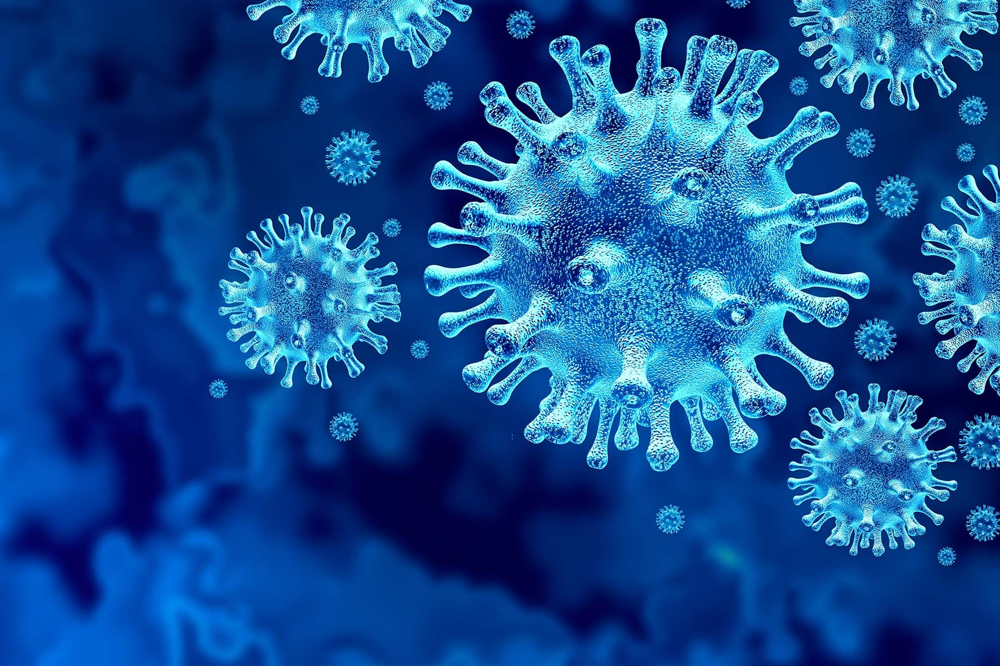

Reports of New U.S. COVID Variant are Inaccurate
Jan.11, 2021 -- Reports about a new coronavirus variant originating in the U.S. are speculative and inaccurate, CDC officials told The New York Times.
The theory came from Deborah Birx, MD, a member of the White House coronavirus task force, during a recent meeting.She showed graphs of the increasing cases in the U.S. and suggested that a new variant that started in the U.S. could explain the surge.
The idea was also included in a Jan.3 report sent to state governors: 'This fall/winter surge has been at nearly twice the rate of rise of cases as the spring and summer surges.This acceleration suggests there may be a USA variant that has evolved here, in addition to the UK variant that is already spreading in our communities and may be 50% more transmissible.'
However, CDC officials say the hypothesis is not true.They asked for the statements to be removed but were denied, the newspaper reported.The CDC then issued a statement in response to media requests about a potential new variant.
'Researchers at the Centers for Disease Control and Prevention are monitoring all emerging variants of the coronavirus, including in 5,700 samples collected in November and December.To date, neither researchers nor analysts at CDC have seen the emergence of a particular variant in the United States,' Jason McDonald, a spokesperson for the CDC, said in the statement.
CNN, which first reported on the speculation, has also updated stories to reflect that the CDC hasn’t found evidence of a U.S. variant.
'Based on scientific understanding of viruses, it is highly likely there are many variants evolving simultaneously across the globe,' McDonald said in the statement to news outlets.'However, it could take weeks or months to identify if there is a single variant of the virus that causes COVID-19 fueling the surge in the United States similar to the surge in the United Kingdom.'
Several variants are circulating in the U.S., CDC officials said, including B.1.1.7, which was first identified in the UK.As of Friday, 63 cases have been identified in 8 states, according to a CDC map.California has reported 32 cases, and Florida has reported 22 cases.
Three additional cases have been identified in New York, Gov.Andrew Cuomo announced on Saturday, including two linked to the first case discovered last week in Saratoga Springs and an unrelated case in Nassau County.
'The UK strain is here, it is real, and the Usain Bolt-like speed through which it spreads is nothing short of frightening,' Cuomo said in a statement.'There's no mystery as to how it got here — it got on a plane and flew here from Europe, just like the original strain did.'
The CDC is also monitoring variants that emerged in South Africa and Nigeria but hasn’t reported any cases in the U.S. so far.Due to mutations in the variants, scientists are studying whether changes could make vaccines less effective.At the moment, researchers say the current vaccines create numerous antibodies that tackle different parts of the virus.
'I’m quite optimistic that even with these mutations, immunity is not going to suddenly fail on us,' Jesse Bloom, a virologist at the Fred Hutchinson Cancer Research Center who has published a paper about the mutations, told STAT News.'It might be gradually eroded, but it’s not going to fail on us, at least in the short term.'
Posted By: Carolyn Crist

Content Date: n/a
Download Date: 2021-09-16
Document ID: L0C04G9VE